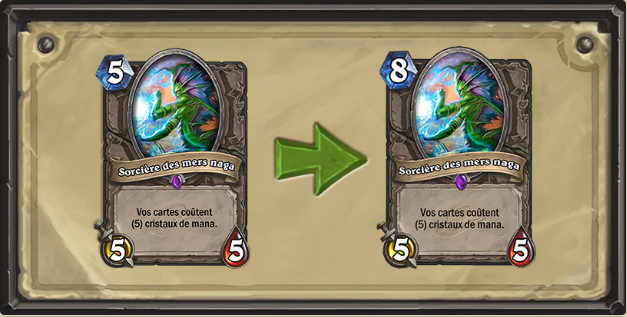
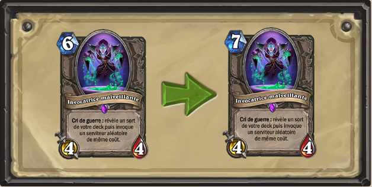
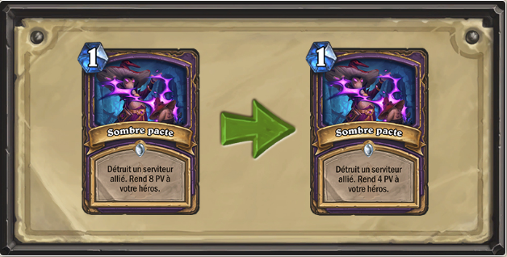
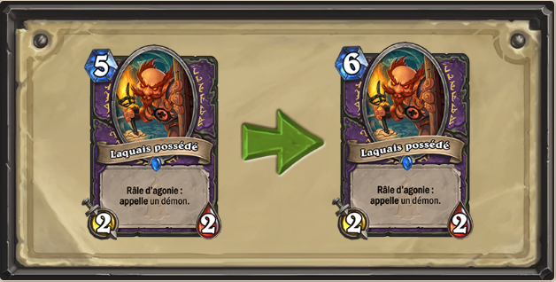
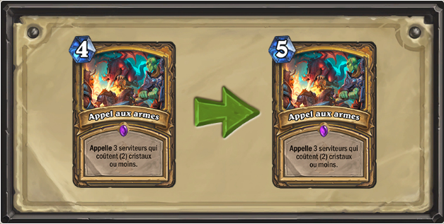
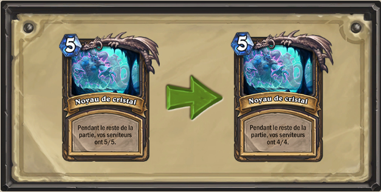

Vague de nerf sur Hearthstone
Une série de nerfs pour 6 cartes de Hearthstone est planifiée le mardi 22 mai dans le jeu. Cet équilibrage touche les cartes suivantes : Invocatrice malveillante, Sombre pacte, Sorcière des mers naga, Laquais possédé et Grotte des profondeurs.
Sorcière des mers nagas
La Sorcière des mers naga coûte 8 manas (au lieu de 5).
Invocatrice malveillante
L'Invocatrice malveillante coûte 7 manas (au lieu de 6 ).
Sombre pacte
Sombre pacte rend 4 points de vie (au lieu de 8)
Laquais possédé
Le Laquais possédé coûte 6 manas (au lieu de 5 ).
Appel aux armes
Appel aux armes coûte 5 (au lieu de 4 ).
Grotte des profondeurs : Noyau de cristal
La récompense de la quête Grotte des profondeurs fait passer les serviteurs à 4/4 (au lieu de 5/5).
